Experiment 2: ROS Configuration and Basic Concepts
Lab Manual 2 - Configuring Cognitive ROS
Experimental goals
Master how to configure and install ROS1 in a Linux virtual machine.
Understand the characteristics of the ROS system and learn the basic commands of ROS.
Understand the topic mechanism by driving the little turtle node, and use visualization tools to view the relationships between nodes.
Experiment preparation
Experiment 1 has installed and configured Ubuntu20.04 virtual machine.
Make sure the virtual machine is connected and can access the network.
Experimental steps
Experiment 1: Configuring the ROS1 operating environment on Ubuntu
First, I recommend a ROS learning website. Various ROS1/2 tutorials are shared in detail on this website, allowing students to independently explore the learning fun of ROS: Yuxiang ROS Robot https://fishros.com
Here we will use an open source script to install and configure the ROS environment with one click. Using this script to configure the ROS system will be extremely convenient and suitable for beginners to quickly get started with ROS. At the same time, we also recommend some online teaching videos to students. Students who are willing to learn can refer to the videos to consolidate and expand their ROS learning:
https://www.bilibili.com/video/BV1zt411G7Vn/?share_source=copy_web&vd_source=55dbc55501d5dcce34712b0bbd70daa4Open the virtual machine, enter the main interface and call out the terminal (after clicking the mouse on the desktop, press and hold the ctrl+alt+T keys at the same time, refer to the experiment manual of the first lesson.)
Enter the following command in the terminal (you can right-click to select the following command, click copy, and then paste it into the terminal):
wget http://fishros.com/install -O fishros && . fishros
If you are required to enter a password to grant operation permission, enter the set user password. Note that the entered password will not be displayed explicitly. After inputting, directly press the Enter key.

At this step, we enter the number 1 and press the Enter key.
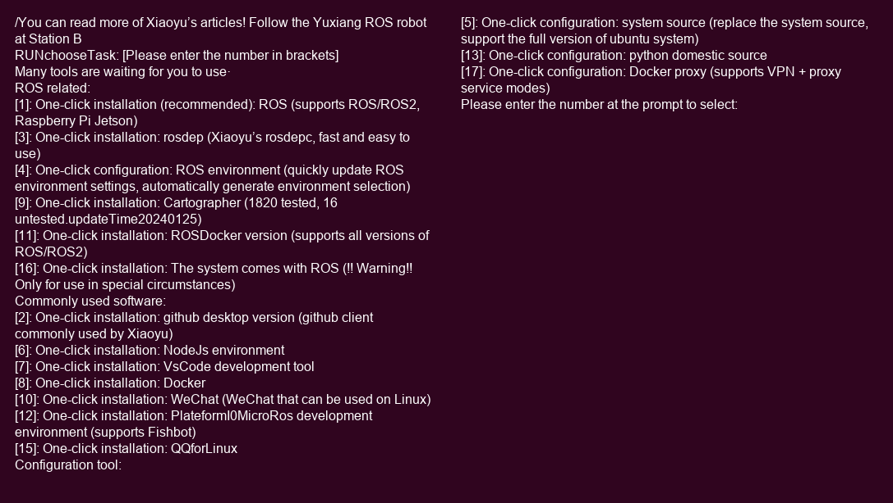
Next, choose to change the system source and continue the installation. Because the software installation source of the native Ubuntu system comes from the external network, our direct access speed will be very slow, but there are domestic mirror websites, and our access to domestic websites will be faster. Enter the number 1 and press the Enter key.
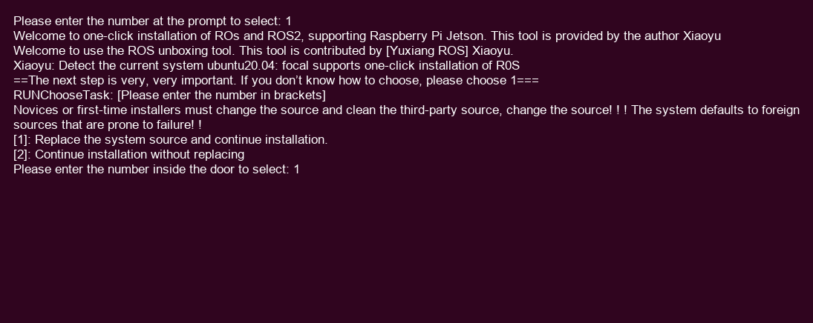
At this point enter the number 2 and press Enter.
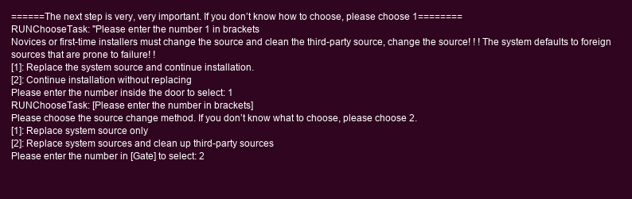
The next step is to let the script automatically help us select the source with the fastest download speed. Enter the number 1 and press Enter.
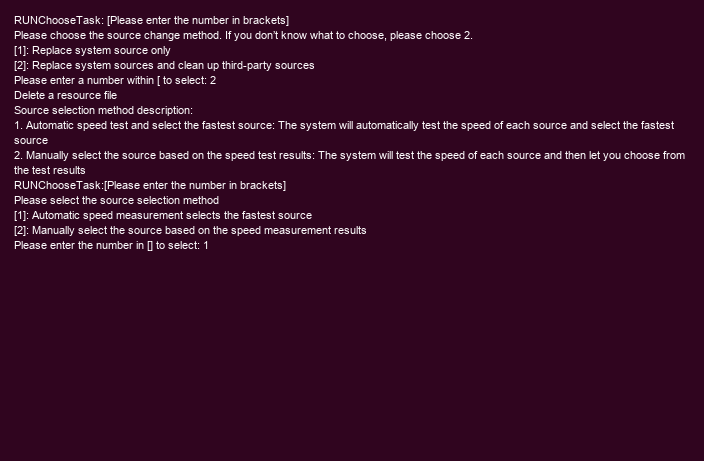
After waiting for a certain period of time, we reach this step. We choose to install ROS1, enter the number 3 and press the Enter key.
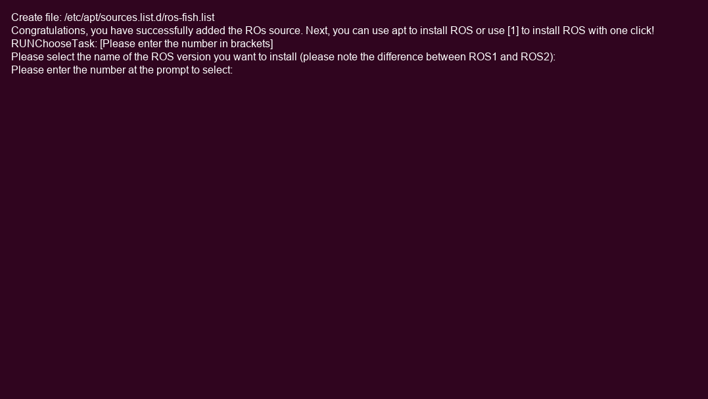
In this step, enter the number 1 and press Enter to select the desktop version.
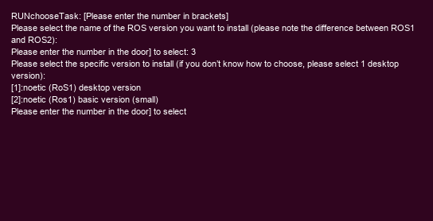
After a slightly longer waiting time, the ROS1 system is installed.
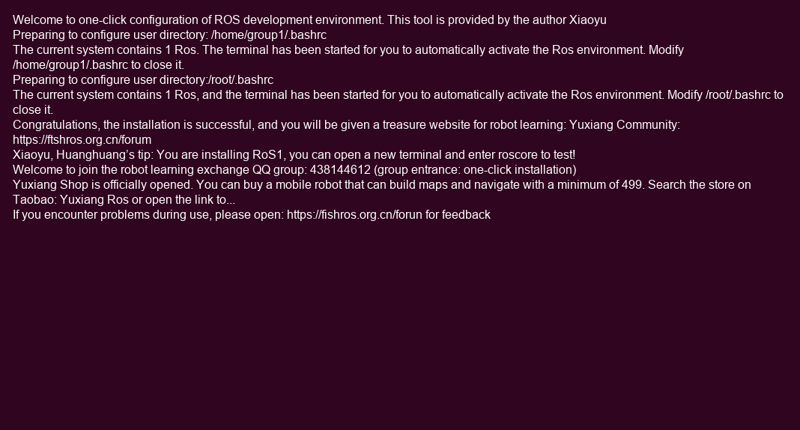
Then enter the following command:
roscore
If the following interface appears normally, it means that the ROS system environment is installed and configured successfully. This command must be run before running all ROS programs. Now you can explore the charm of ROS. At this time, take a snapshot of the virtual machine on the ubuntu system that has been configured with the ROS1 environment, and save the system status at this time (see Experiment Manual 1 for the method of taking system snapshots).

Experiment 2: Running the little turtle component of ROS
For ROS1, it comes with a program similar to "Hello world!", which is the turtle simulator component. You can control a turtle to move through the keyboard. Understanding the operating principle of this component can greatly help you get started learning the ROS system.
Do not close the originally opened terminal running roscore. Call out a new terminal and enter the following command:
rosrun turtlesim turtlesim_nodeThis command starts the turtle emulator node. Among the two commands following the rosrun command, turtlesim represents a function package, which can be understood as a collection that collects all the content for running simulated turtle components, and turtlesim_node represents a node in the function package. After running this command, a window simulating a turtle appears.
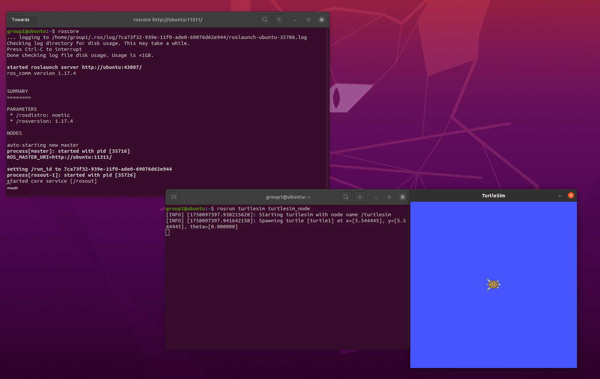
Create a new terminal, enter rosrun turtlesim (note that there is a space at the end of the command), and double-click the tab key to view the nodes under the current package.

A Linux tip: enter half of the corresponding terminal command (when the entered characters can be located in this category or a command), and press the tab key to automatically complete the command, eliminating the trouble of typing errors.

Run the turtle_teleop_key node, click the terminal with the mouse, and use the arrow keys to control the turtle.
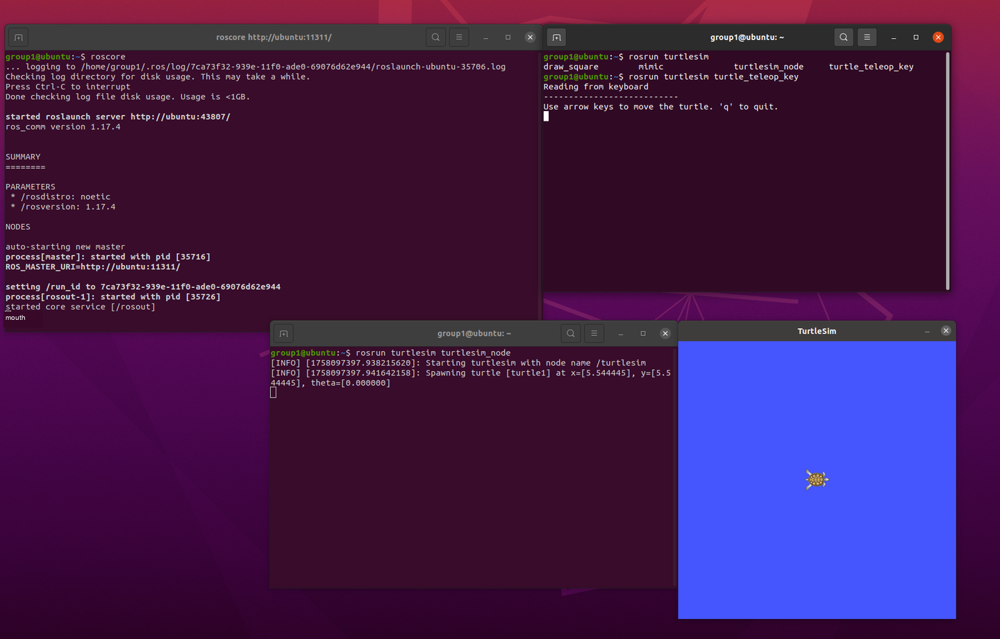
Experiment 3: Use visualization methods to view the operating principle of the turtle component
Create a new terminal and enter the rqt_graph command. A visual interface will appear showing the currently running nodes and the communication between them. You can see that /teleop_turtle (remotely controlled turtle node) published the /turtle1/cmd_vel topic. The content of this topic is the parameters of the turtle's speed steering. /turtlesim (turtle simulation node) subscribes to this topic. If you want to stop a command being executed by a terminal, press ctrl plus the c key on the terminal to terminate.

Similarly, there are many uses for the rqt command. After typing rqt_ and double-clicking the tab key, you can see other visualization tools of rqt. Let’s try the rqt_plot command again.
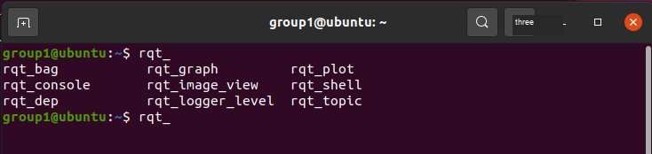
Select the turtle's position information in the topic to be monitored, and then use the keyboard to control the turtle, and you will see that the changes in the turtle's coordinate information can be monitored by the chart.
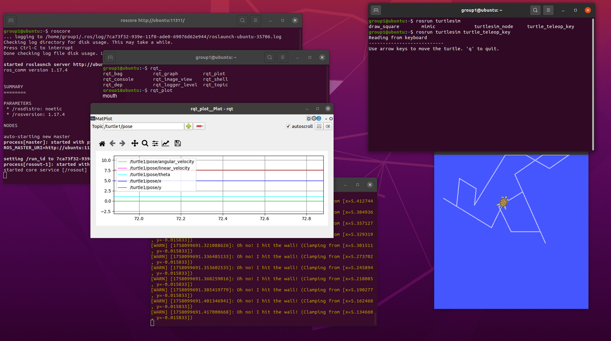
Experiment 4 (Extended): Use of basic rosnode and rostopic commands in ROS
Directly enter the rosnode command in a new terminal to display its usage. For example, enter the rosnode list command to display the currently running nodes. Enter rosnode info plus a space plus the name of the node to view the detailed information of the node.


Similarly, the rostopic command can also view information on the current topic.

Note that before we drove the turtle, we used the teleop_turtle node to read keyboard input and publish information in the /turtle1/cmd_vel topic to drive the turtle. We can also use the command line to make the turtle act automatically.
Enter the command as follows and double-click the tab key at this time.

You can see that the /turtle1/cmd_vel topic that controls the turtle consists of linear velocity and angular velocity parameters. Press the left and right arrow keys to directly modify the value of x after linear in the first line to 1.0. Press Enter again and you can see that the turtle stopped after traveling a short distance because this topic has only been published once.


Now enter the command as follows and add the -r 10 parameter, which means to set the topic loop to publish once every second, so that the turtle will keep moving forward until it hits the wall.

Now, use the operations learned above to make the turtle move in circles, and use visualization tools to observe changes in its position coordinates.

Organizing link information
This section organizes external links that appear in the manual into bullet points that are readable offline. To prevent the material from being too long, the web content is summarized in the form of classroom purposes and key tips, and the original URL is retained for reference after class.
1. Yuxiang ROS tools and learning portal (Webpage title: Yuxiang ROS - Hefei Magic Blade Technology Co., Ltd.)
Original link: https://fishros.com
Classroom use: As a supplementary entrance for ROS installation, configuration and introductory learning.
• This portal aggregates ROS installation scripts, tutorials, and FAQ materials.
• In the classroom, one-click installation scripts are mainly used to complete the ROS1 environment configuration. After installation, roscore, turtlesim, and rqt_graph are used to verify.
• If access to the installation source is slow, you can troubleshoot by combining domestic image sources and the network environment provided by the classroom.
2. ROS introductory video course
Original link: https://www.bilibili.com/video/BV1zt411G7Vn/
Classroom Purpose: Supplementary video for understanding ROS nodes, topics, services and tool chains after class.
• Suitable for viewing after completing this manual to supplement the basic concepts of ROS.
• Emphasis on roscore, turtlesim, teleop, rostopic, rosnode, and rqt_graph in this manual.
• The video content is long. It is recommended to search and watch by question instead of playing the entire video in class.
3. Yuxiang ROS one-click installation script entry
Original link: http://fishros.com/install
Classroom use: Used to download and run the ROS installation script through the command line.
• The command in the manual is: wget http://fishros.com/install -O fishros && . fishros
• Before running the script, you need to confirm that the virtual machine is connected to the Internet normally. During execution, select ROS1 and desktop version according to the classroom requirements.
• The script will change the system software source and installation package. Please create a snapshot of the virtual machine after successful installation.